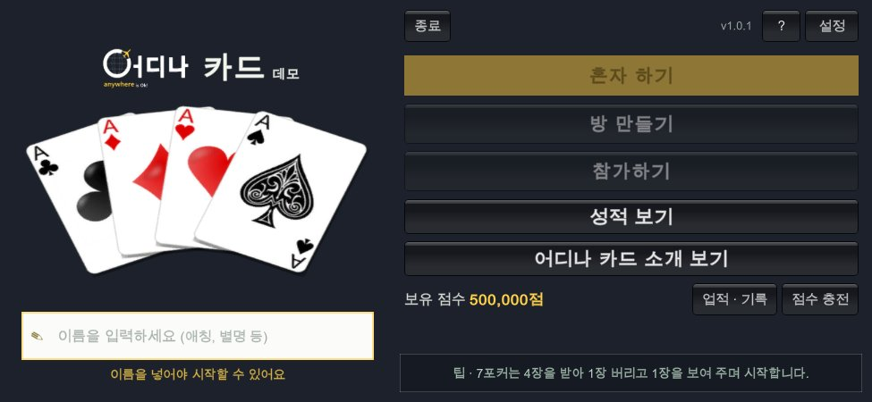
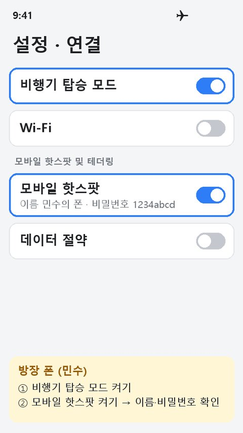
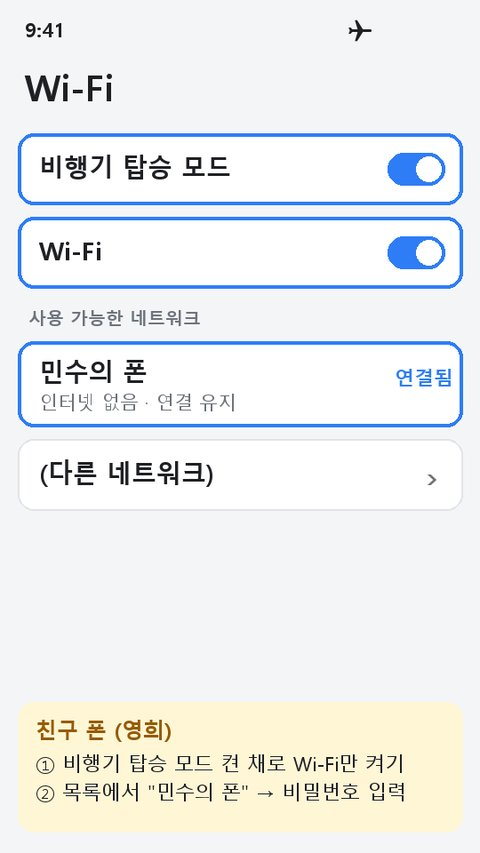
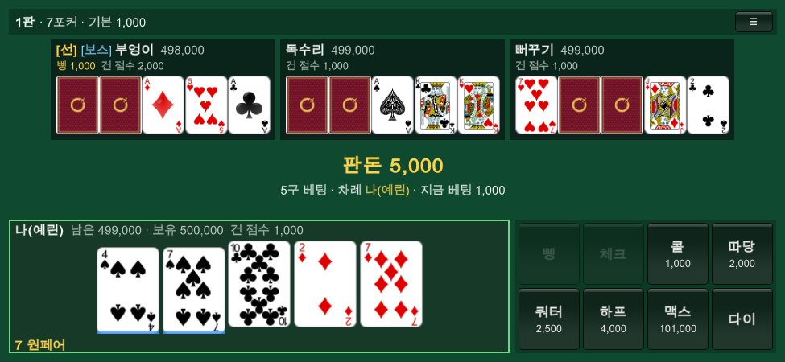
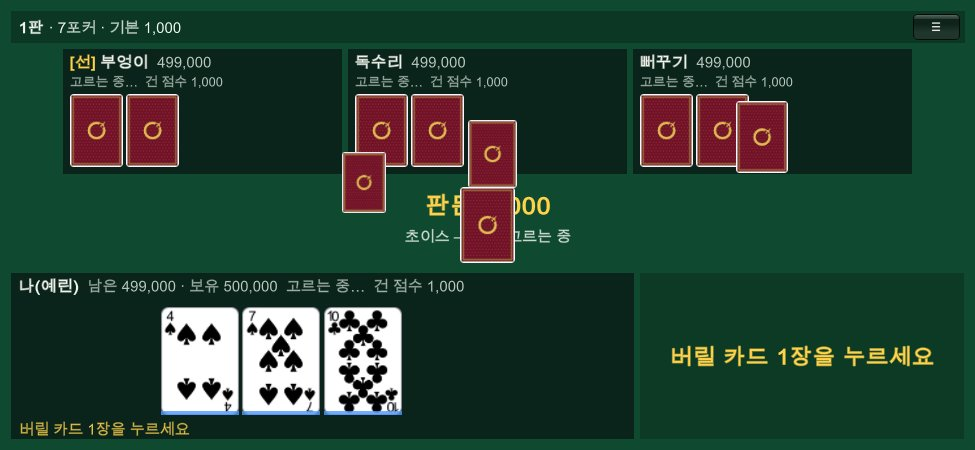
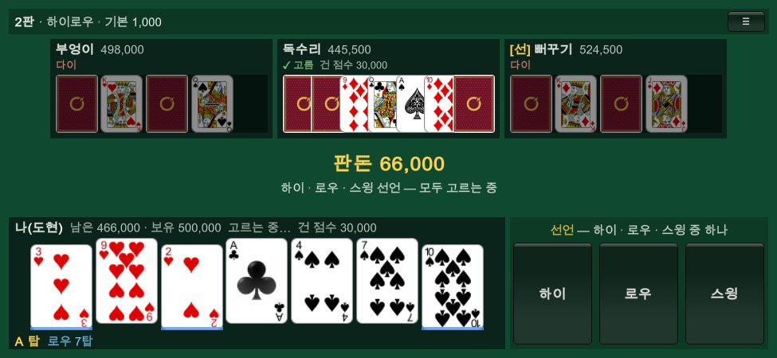
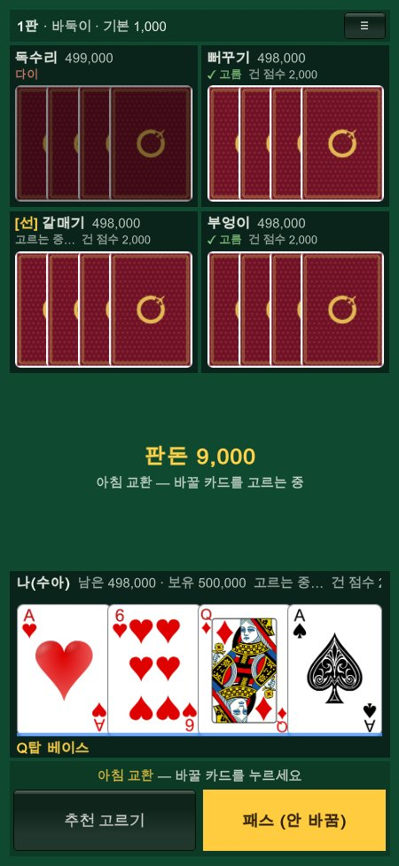
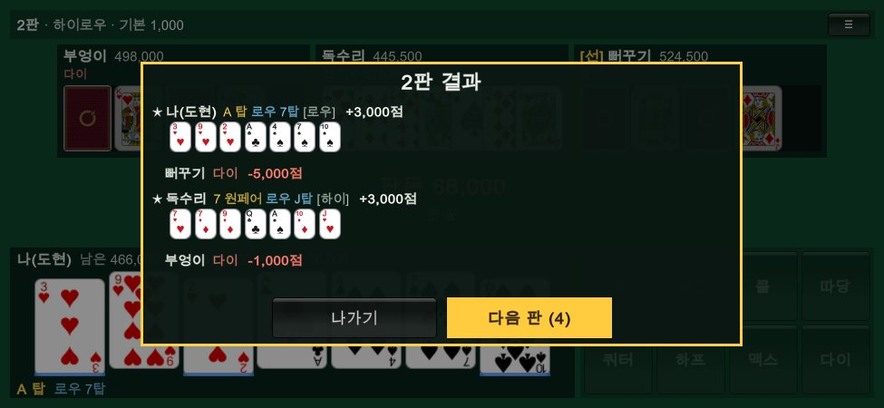
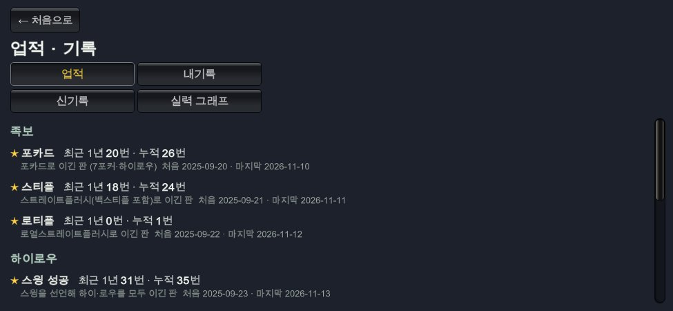
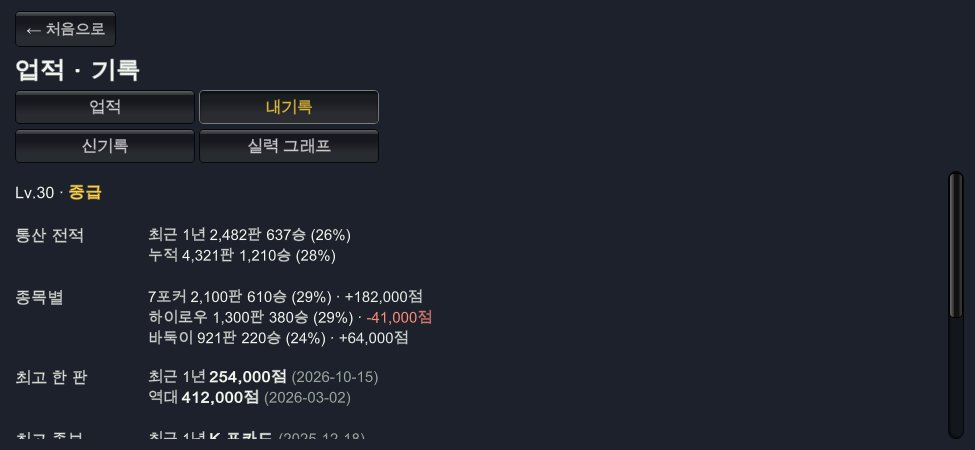

1. 시작하기
앱을 열면 이름 칸이 있습니다. 처음 켜면 칸이 비어 있으니 애칭이나 별명을 넣어 주세요. 한 번 넣은 이름은 다음에도 그대로 나옵니다.
| 혼자 하기 | 봇과 바로 한 판. 종목(7포커 · 하이로우 · 바둑이)과 인원(2~5명)을 고르고 입장. 기본 베팅 같은 자세한 규칙은 설정에서 고릅니다. |
|---|---|
| 방 만들기 | 내가 방장이 되어 친구를 부릅니다. 종목·인원·점수 게임 / 연습 게임·방 이름·방 키를 정하고 방을 엽니다. |
| 참가하기 | 친구가 만든 방에 들어갑니다. QR 찍기, 붙여넣기, 참가 코드, 같은 와이파이의 방 목록 중 편한 것으로. |
| 성적 보기 | 1일 · 1주 · 1개월 · 3개월 · 누적 성적과 고른 종목의 이번 달·분기 순위. |
| 보유 점수 | 버튼 아래에 내 보유 점수와 업적 · 기록·점수 충전 버튼이 있습니다 (보유 점수·업적). |

2. 초대·참가
- 같은 와이파이·핫스팟: 인터넷 없이도 됩니다 (비행기에서 핫스팟으로 하기). 방장이 방을 열면 같은 와이파이 친구의 참가하기 화면에 방이 뜹니다. 방 키를 넣고 입장하거나 방장 화면의 QR을 찍으세요.
- 멀리 있는 친구: 방장 대기실의 카톡 초대로 링크를 보내면, 받은 친구는 링크만 누르면 같은 방에 들어옵니다.
- 인터넷 방 목록: 방장이 방 만들기에서 인터넷 목록: 보이기(기본)를 두면, 멀리 있는 사람의 참가하기 화면에도 그 방이 [인터넷]으로 뜹니다. 방 키를 아는 사람만 들어올 수 있고, 방 키를 5번 틀리면 그 기기는 5분 동안 막힙니다.
- 사람이 모자라면: 방장이 빈자리 봇으로 채우고 시작을 누르면 봇이 빈자리를 채웁니다. 늦게 온 친구는 봇 자리를 구경하다 그 판이 끝나면 이어받습니다.
- 게임 중에 나갔다 돌아오면 내 자리를 다시 이어받습니다. 그 사이 내 자리는 봇이 둡니다.
비행기에서 (인터넷 없이) 핫스팟으로 하기
비행기·기차·캠핑장처럼 인터넷이 없는 곳에서도 됩니다. 방장 폰의 핫스팟이 공유기 역할을 하고, 친구들은 그 핫스팟에 와이파이로 붙습니다. 게임은 폰끼리만 주고받으므로 모바일 데이터를 쓰지 않습니다. 앱은 미리 설치해 두세요.
- 방장: 비행기 탑승 모드를 켜고 모바일 핫스팟을 켭니다. 핫스팟 이름과 비밀번호를 친구들에게 알려 줍니다.
- 친구들: 비행기 탑승 모드는 켠 채로 Wi-Fi만 켜고 방장 핫스팟에 연결합니다. "인터넷 없음 — 연결을 유지할까요?"가 나오면 유지를 고릅니다.
- 방장: 앱에서 방 만들기 → 방 열고 입장. "인터넷 없음 — 같은 와이파이에서만 참가할 수 있습니다"는 핫스팟에서는 정상입니다.
- 친구들: 참가하기에서 방을 누르고 방 키를 넣거나, QR 찍기로 방장 화면의 QR을 찍습니다.


방장 폰은 핫스팟과 방을 같이 돌려 배터리를 많이 씁니다. 방은 방장 폰 안에 있어서 방장이 앱을 완전히 끄면 게임이 끝납니다. 기내에서는 설정에서 음성·효과음을 끄거나 이어폰을 쓰고, 항공사 안내를 따르세요.
3. 게임 화면
- 위쪽에 다른 사람 자리, 아래쪽에 내 자리, 오른쪽(세로 화면은 아래)에 버튼이 있습니다.
- 자리 이름 앞의 [선]은 이번 판에 카드를 돌린 사람, [보스]는 공개한 카드가 가장 좋아 먼저 베팅하는 사람입니다.
- 가운데에 판돈과 지금 무엇을 하는 중인지 나옵니다. 자리마다 보유 점수와 이번 판에 건 점수가 보입니다.
- 내 카드 가운데 남에게 안 보이는 카드는 조금 아래로 내려가 있고 밑에 파란 줄이 있습니다.
- 오른쪽 위 ≡ 메뉴에 족보 보기, 채팅, 나가기가 있습니다.

4. 7포커
- 판을 시작할 때 모두 기본 베팅을 냅니다.
- 초이스: 4장을 받아 1장을 버리고, 남은 3장 가운데 1장을 골라 공개합니다 (설정에 따라 3장 초이스, 또는 2장 + 1장 공개).
- 4구 · 5구 · 6구: 한 장씩 공개 카드를 받고 그때마다 베팅합니다. 공개 카드가 가장 좋은 보스부터 베팅합니다.
- 7구(히든): 마지막 한 장은 나만 보는 카드로 받고 마지막 베팅을 합니다.
- 끝까지 남은 사람끼리 7장 가운데 가장 좋은 5장으로 겨룹니다. 모두 다이하고 한 사람만 남으면 그 사람이 판돈을 가져갑니다.

족보 (높은 순)
| 로티플 | A·K·Q·J·10 같은 무늬 |
|---|---|
| 백티플 | A·2·3·4·5 같은 무늬 |
| 스티플 | 숫자가 이어지는 5장, 같은 무늬 |
| 포카드 | 같은 숫자 4장 |
| 풀하우스 | 같은 숫자 3장 + 같은 숫자 2장 |
| 플러시 | 같은 무늬 5장 |
| 마운틴 | A·K·Q·J·10 |
| 백스트레이트 | A·2·3·4·5 |
| 스트레이트 | 숫자가 이어지는 5장 |
| 트리플 · 투페어 · 원페어 · 탑 | 같은 숫자 3장 · 2장씩 두 쌍 · 2장 · 가장 높은 카드 |
같은 족보끼리는 숫자로, 숫자도 같으면 무늬(♠ > ◆ > ♥ > ♣)로 정합니다. 설정에서 A 순환 스트레이트(K·A·2·3·4 같은)를 켤 수 있습니다.
5. 하이로우
7포커와 같이 진행하고, 7구 베팅이 끝나면 남은 사람이 각자 하이 · 로우 · 스윙 가운데 하나를 동시에 고릅니다 (선언). 로우가 안 되는 패는 하이만 고를 수 있습니다. 판돈은 하이에서 이긴 사람과 로우에서 이긴 사람이 반씩 나눕니다.
- 로우: 숫자가 모두 다른 5장으로, 높은 숫자가 낮을수록 셉니다. A가 가장 낮고 6탑(A·2·3·4·6)이 가장 좋습니다. 5장에 페어·스트레이트·플러시가 있으면 로우가 되지 않습니다.
- 스윙: 하이와 로우를 둘 다 노립니다. 둘 다 이겨야 판돈을 모두 가져가고, 하나라도 지면 아무것도 못 받습니다.
- 포카드 이상은 스윙만 고를 수 있고, 모든 로우를 이깁니다.
- 하이를 고른 사람만 있거나 로우를 고른 사람만 있으면 그쪽에서 이긴 사람이 판돈을 모두 가져갑니다.

6. 바둑이
- 모두 기본 베팅을 내고 4장씩 받은 뒤 베팅합니다.
- 아침 · 점심 · 저녁 세 번, 바꾸고 싶은 카드를 골라 새 카드로 바꿉니다 (안 바꾸면 패스). 바꿀 때마다 그 뒤에 베팅합니다.
- 추천 고르기를 누르면 바꾸면 좋은 카드를 골라 줍니다.
- 저녁 베팅까지 끝나면 남은 사람끼리 겨룹니다.

바둑이 족보
- 무늬와 숫자가 모두 다른 카드가 많을수록 좋습니다: 메이드(4장) > 베이스(3장) > 투베이스(2장) > 1장.
- 장수가 같으면 가장 높은 숫자부터 비교해 낮은 쪽이 이깁니다. A가 가장 낮습니다.
- 가장 좋은 패: 골프(A·2·3·4) > 세컨드(A·2·3·5) > 써드(A·2·4·5) > …
- 무늬 순서는 없고, 똑같으면 판돈을 나눕니다.
7. 베팅
| 삥 | 아직 아무도 걸지 않았을 때 기본 베팅만큼 겁니다. |
|---|---|
| 체크 | 아직 아무도 걸지 않았을 때 걸지 않고 넘깁니다. |
| 콜 | 앞사람과 같은 점수를 맞춥니다. |
| 따당 | 앞사람이 건 점수의 두 배로 올립니다. |
| 쿼터 | 콜하고, 판돈의 1/4만큼 더 올립니다. |
| 하프 | 콜하고, 판돈의 1/2만큼 더 올립니다. |
| 맥스 | 콜하고, 맥스 한도(기본 베팅 × 설정한 배수)만큼 더 올립니다. |
| 다이 | 이번 판을 포기합니다. 이미 건 점수는 돌려받지 않습니다. |
- 올리기(따당·쿼터·하프·맥스)는 한 차례에 3번까지입니다. 쿼터·하프로 올리는 점수는 기본 베팅의 1/10 단위로 내립니다.
- 보유 점수가 모자라면 가진 만큼만 걸고 올인이 됩니다. 올인한 사람은 자기가 건 만큼까지의 판돈에서만 겨룹니다.
- 491 룰(설정): 4구에 9 이상 원페어를 보인 보스는 하프나 다이만 할 수 있습니다.
- 아침벳 · 점심벳(바둑이 설정): 그 차례에는 하프나 다이만 할 수 있습니다.
8. 땡값
아주 좋은 패를 보이면 다른 사람에게서 판돈과 따로 땡값을 받습니다. 설정에서 끄고 켭니다.
| 배수 | 7포커·하이로우: 포카드 1 · 스티플 2 · 백티플 3 · 로티플 4 바둑이: 5탑 메이드 1 · 써드 2 · 세컨드 3 · 골프 4 |
|---|---|
| 고정 (모두에게) | 기본 베팅 × 10(또는 20) × 배수를 다른 사람 모두(다이한 사람 포함)에게서 받습니다. 패를 보였으면 판에서 져도 받습니다. |
| 건 점수 × 배수 | 내가 건 점수 × 배수를 끝까지 남은 진 사람에게서 받습니다. 판에서 이겨야 받습니다. |
내는 사람은 남은 보유 점수까지만, 받는 사람은 판을 시작할 때 보유 점수까지만 오갑니다. 땡값 패끼리는 서로 빼고 차이만 오갑니다.

9. 설정
- 종목 · 베팅: 7포커 · 하이로우 · 바둑이, 기본 베팅(100 ~ 5,000), 맥스 한도(×50 · ×100 · ×200 · ×300), 판 수
- 7포커 · 하이로우: 처음 패 받기(4장 초이스 · 3장 초이스 · 2장 + 1장 공개), A 순환 스트레이트(7포커), 491 룰
- 바둑이: 하프·다이만 하는 차례(없음 · 아침벳 · 점심벳)
- 땡값: 켬/끔, 방식(고정 · 건 점수 × 배수), 땡값 1배(기본 베팅 × 10 · × 20)
- 봇 · 시간: 봇 속도(혼자 하기 · 방 만들기 따로), 턴 시간, 혼자 할 때 [다음 판] 누르기
- 소리 · 기록: 음성(삥·콜·하프·다이 …, 자리마다 다른 목소리), 효과음, 순위표 참여
10. 보유 점수 · 업적 · 기록
보유 점수
- 처음에 50만 점을 드립니다. 점수 게임(혼자 하기, 점수 게임으로 연 방)의 판 결과가 보유 점수에 더해지고 빠집니다.
- 판에 들어가려면 기본 베팅 × 100(맥스 한도가 ×200·×300이면 그 배수) 이상이 있어야 합니다. 예: 기본 베팅 1,000이면 10만 점.
- 충전: 처음 화면 점수 충전에 어디나 블로그 글 목록이 나옵니다. 글을 하나 열 때마다 10만 점을 드립니다 (인터넷이 될 때, 같은 글은 하루 한 번). 보유 점수가 200만 점이 될 때까지 쌓을 수 있습니다.
- 게임 안의 점수는 돈이 아니며 사고팔 수 없습니다. 보유 점수와 기록은 이 기기에 암호화해 저장되어 고칠 수 없고, 지금은 폰과 태블릿의 점수가 따로입니다.
점수 게임 / 연습 게임
- 방장이 방 만들기에서 고릅니다 (기본 점수 게임).
- 점수 게임: 판 결과가 각자의 보유 점수에 더해지고 업적·내기록·신기록에 들어갑니다.
- 연습 게임: 점수를 계산해 보여 주지만 보유 점수·업적·기록에는 넣지 않습니다. 점수가 없어도 칠 수 있습니다.
업적 · 기록
처음 화면 업적 · 기록에 네 탭이 있습니다. 점수 게임만 셉니다.
| 업적 | 항목마다 최근 1년 횟수 · 누적 횟수와 처음·마지막으로 한 날. 족보: 포카드 · 스티플 · 로티플 (7포커·하이로우에서 그 패로 이긴 판) 하이로우: 스윙 성공 · 6탑 로우 바둑이: 골프 · 세컨드·써드 특별한 승리: 올인 승리 · 땡값 · 대박(한 판에 기본 베팅의 100배 이상) |
|---|---|
| 내기록 | 레벨·등급, 통산 전적, 종목별 전적, 최고 한 판, 최고 족보, 최다 연승, 최고 보유 점수 (최근 1년과 역대). 판이 끝날 때 기록을 넘으면 결과 창에 "▲ 내기록"이 뜹니다 (처음 10판은 알리지 않음). |
| 신기록 | 모든 사람의 순위 (혼자 하기 기록만, 종목별): 이달의 최고 한 판 · 이달의 최다 연승 · 명예의 전당 · 업적별 이달 횟수 · 이번 달·분기 누적 점수. 이달 순위는 매월 1일(UTC)에 새로 시작합니다. 설정의 "순위표 참여"를 끄면 올리지 않습니다. |
| 실력 그래프 | 최근 14일 또는 월별로 판당 점수, 승률, 다이 비율. |


레벨 · 등급
- 레벨: 친 판 수로 오릅니다 (5판 Lv.2, 80판 Lv.5, 500판 Lv.11, 2,000판 Lv.21 …).
- 등급: 입문 · 초급 · 중급 · 상급 · 고수 · 명인. 최근 1년 성적(60%)과 최근 30일 성적(40%)으로 정합니다. 판 결과를 기본 베팅 단위로 바꿔 보고, 인원에 비해 얼마나 자주 이겼는지도 함께 봅니다. 최근 1년에 100판을 치기 전에는 "등급 측정 중"으로 나옵니다.
11. 자주 묻는 질문
같은 와이파이인데 방 목록에 방이 안 보여요
방장과 같은 공유기인지 확인하세요. 와이파이 이름이 두 개(통신사 모뎀, 공유기)면 다른 네트워크일 수 있습니다. 그래도 안 보이면 참가 코드로 들어오세요.
카톡 링크를 눌렀는데 앱이 안 열려요
앱을 먼저 설치하세요. 그래도 안 되면 링크 페이지의 참가 코드를 복사해 [참가하기] → [붙여넣기]로 들어오세요.
방장 폰이 꺼졌어요
방은 방장 폰 안에 있어서 방장 앱이 꺼지면 게임이 끝납니다. 다른 사람 화면에는 지금까지의 성적표가 나오고, 이 기록도 성적 보기에 남습니다.
보유 점수가 모자라 들어갈 수 없어요
처음 화면 점수 충전에서 블로그 글을 하나 열 때마다 10만 점이 들어옵니다 (같은 글은 하루 한 번). 기본 베팅을 낮춰 입장 조건을 줄이거나, 연습 게임으로 칠 수도 있습니다.
내 차례 시간이 지나면요?
턴 시간을 정해 두었으면 그 시간이 지난 뒤 10초를 더 드리고, 마지막 10초는 째깍 소리가 납니다. 그래도 안 고르면 방이 대신 고릅니다: 베팅은 체크할 수 있으면 체크, 아니면 다이, 교환은 메이드에 쓰이지 않는 카드를 바꿉니다.
문의

만든 곳 Odina Studio (anywhere · 어디나) · taekan66@gmail.com · 개인정보처리방침